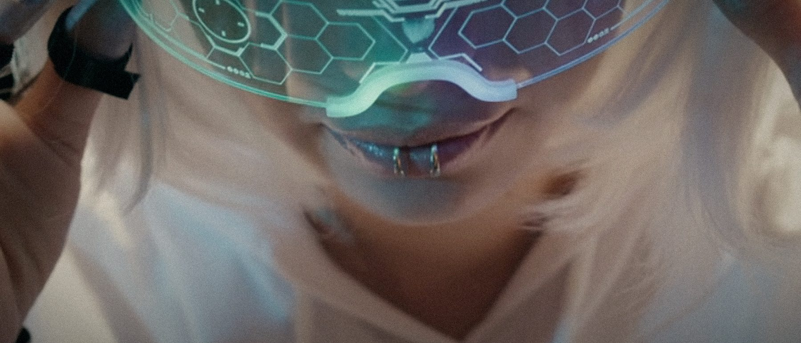
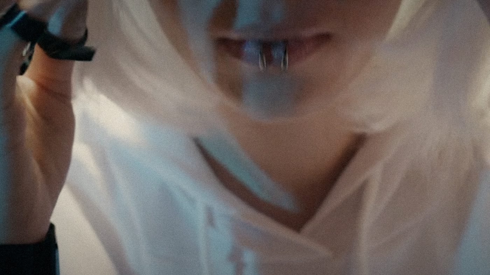
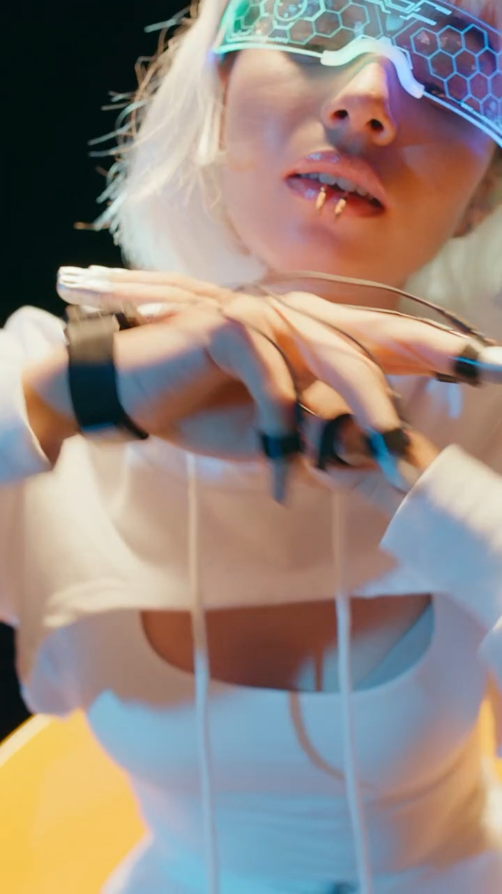
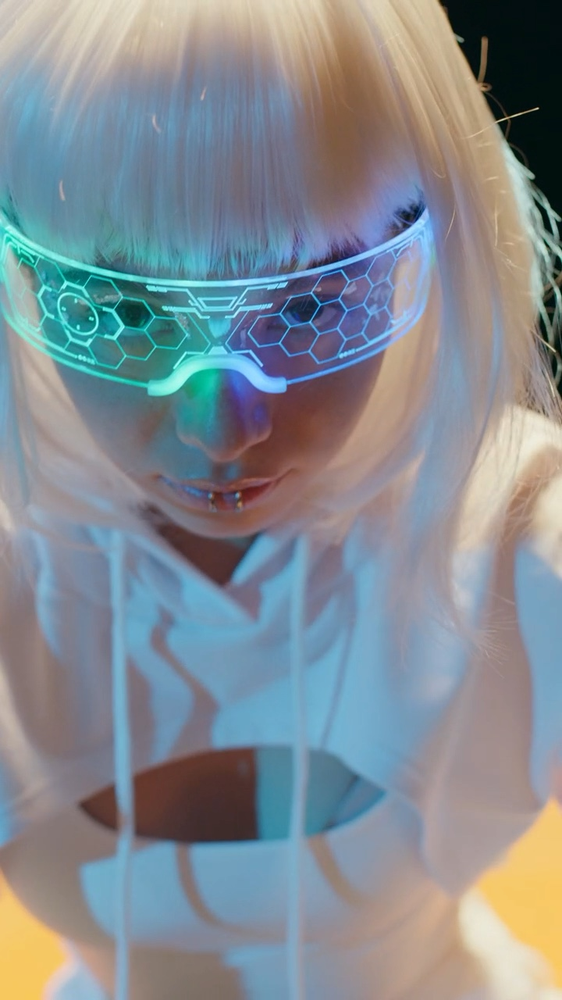
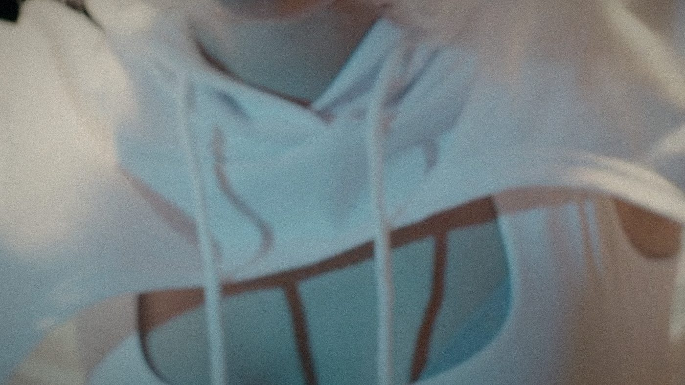

00:00 / 00:00
艺术短片 / 2026 / 13 分钟 · 导演 Ye · 编剧 Ye / 林澈 · 摄影 周野 · 剪辑 Ye · 声音 沈默 · 主演 林澈 / 阿岚 · 2.39:1 / 5.1
项目档案只读
最后更新 2026.09.18Ye / 导演
潮汐之后
《潮汐之后》从一个反复出现的画面开始：一个人坐在干燥的房间里，却听见海水涨上来。我们把记忆当作一种液体来拍——它会蒸发，会渗透，也会在别人的身体里留下盐。
“记忆是第二次溺水。”

制作工具
- 实拍与生成影像混合
- 虚拟制片预演
- 水下声音采样
- 手工绘制的记忆界面
01 · 缘起
最初的剧本只有三页：一个清洗师、一个无法删除的客户、一片不存在的海。我们没有解释潮汐从哪里来，只让它一次次漫过房间。
为了找到“被删掉”的质感，我们把素材反复压缩、再放大，直到画面出现像旧录像带一样的呼吸。人物的脸在清晰与模糊之间来回，记忆也是这样。
02 · 世界
近未来，记忆可以被提取、清洗、转卖。城市把海填平，只在广告里保留蓝色。清洗师替别人忘记，潮汐室是唯一还允许“水”存在的地方。
它其实没有水，只有一面会呼吸的墙。岚在这里工作，也在这里第一次听见自己的童年。
03 · 视觉语言
冷青、钠灯和旧金构成全片的色彩三角。镜头总是比人物晚半秒到达，像记忆跟不上身体；人物在清晰与模糊之间来回，海则始终不在画面中央。
面罩上的界面由手绘扫描完成，保留铅笔的抖动。我们不想让它看起来像一块完美的屏幕。
04 · 制作规格
以 35 毫米变形宽银幕模拟完成分镜，实拍 6 天，生成影像与后期 9 周。声音先于画面完成：潮声由潜水录音、旧空调和心跳叠成。
资产画布




命名约定
角色ye_潮汐_角色_岚_v03
场景ye_潮汐_场景_潮汐室_v02
道具ye_潮汐_道具_面罩_v01
镜头ye_潮汐_镜头_0140_v04
色板
规格表
- 片长
- 13 分钟
- 画幅
- 2.39:1
- 声音
- 5.1
- 拍摄
- 6 天，2026 春
- 版本
- 数字电影包 / 高质量母版
我们最后保留了 47 秒的黑场。海声没有停。
项目档案 · 潮汐之后上海 · 2026